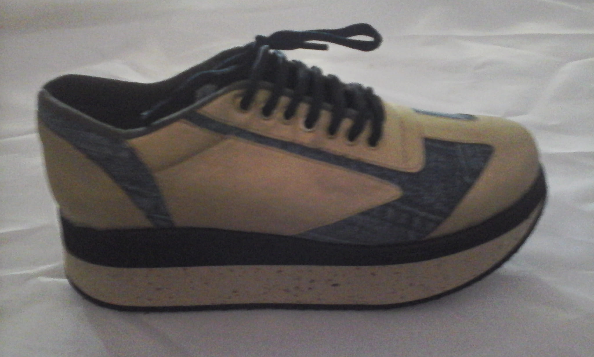
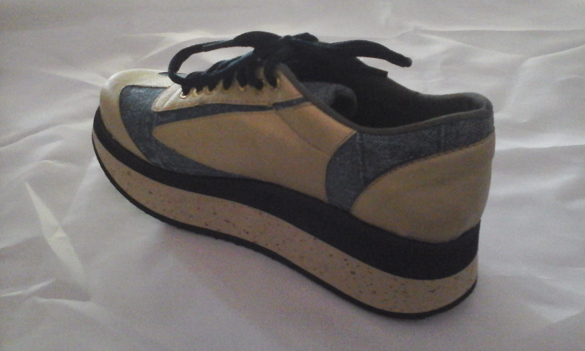
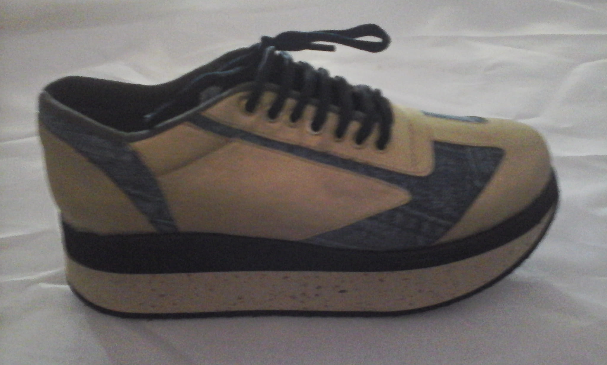
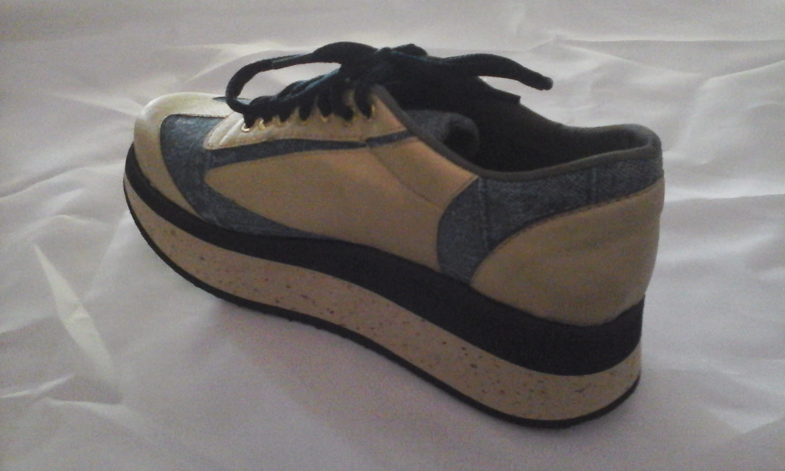
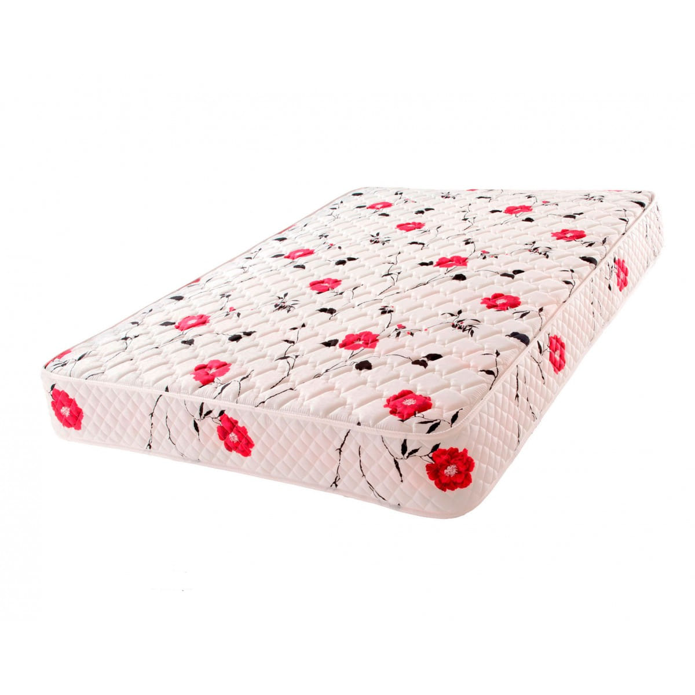
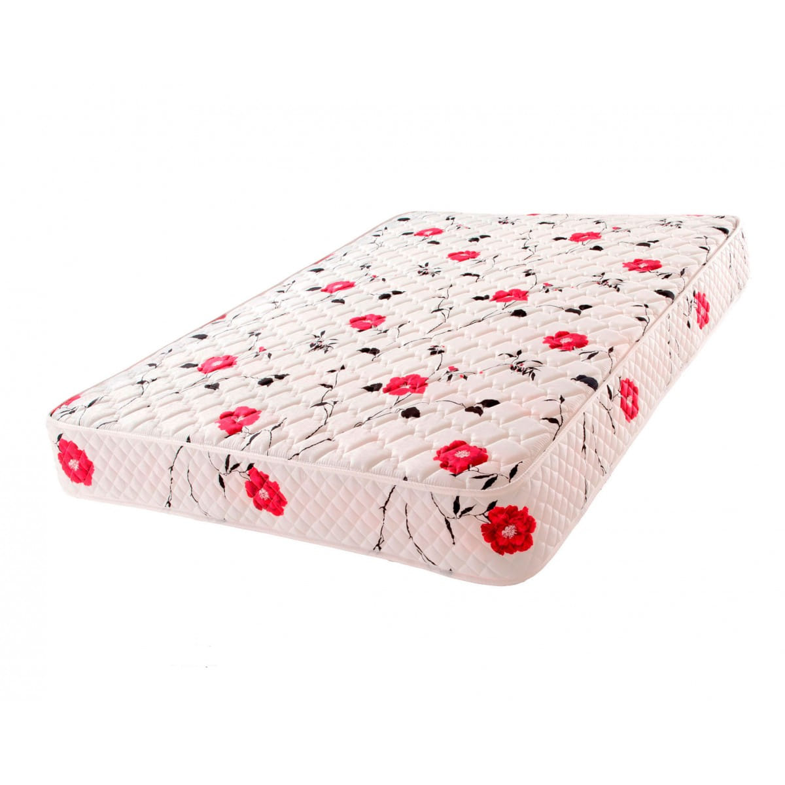

363 manzanas de shoppings de venta de toda clase cerrados re más seguros en invierno con metodologías correctas de banderitas consiste en ser sinceros cada feriante expositor debe ser honesto una banderita significa vendí todo otra banderita significa vendí casi todo otra banderita significa vendí poco y otra banderita significa no vendí nada claro expresadas con colores a elección de las mayorías / Empresas del Siglo XXI Estatales i También Privadas / Multinacional de Seba 64 www


 





 
